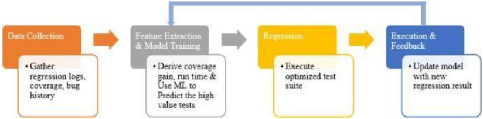
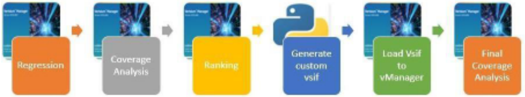
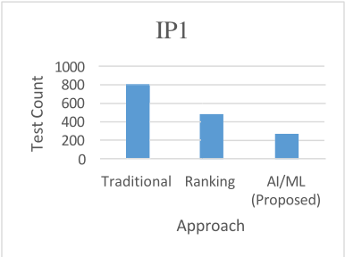
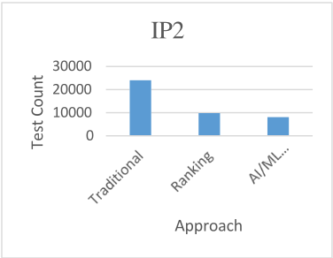
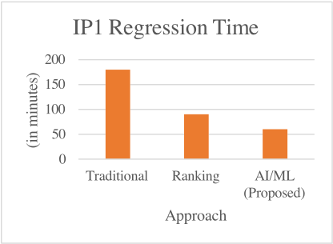
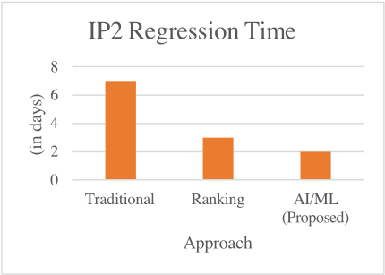
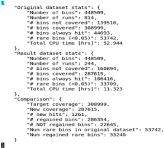
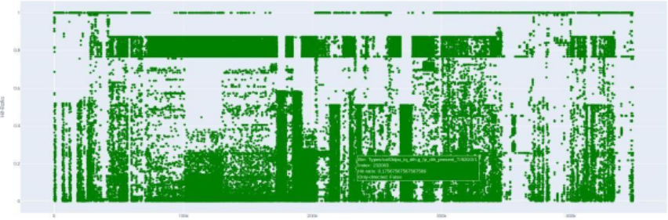

超越启发式方法：面向设计 sign-off 的 AI/ML 驱动验证
论文针对 IP/block 级验证中每日数千条测试的回归 campaign 依赖 brute-force 执行或静态启发式排序、导致算力浪费、覆盖收敛延迟与 corner-case bug 发现滞后的问题，提出一套 AI/ML 驱动的回归优化方法学。该方法自动收集历史回归元数据（日志、覆盖率 delta、bug 历史），经特征工程后用 scikit-learn 等开源框架训练 Random Forest 等模型预测每条测试的 utility score，动态排序执行；每 2-3 轮回归自动增量重训形成闭环，Cadence SimAI 仅用于日志提取，ML 流水线自研、不绑定商业平台，并内置 cold-start 策略。在两个 Multimedia IP 上实现约 65% 测试数削减，回归时间较随机执行降低 66-71%、较排序方法降低 31-33%，覆盖收敛与 sign-off 提速约 25%，且框架无需修改训练代码即可迁移到 protocol IP 与 interconnect IP（60-70% 削减趋势保持）。结论表明该方法可无缝嵌入现有 UVM 回归基础设施，并具备向 subsystem/SoC 级扩展的基础。
IP/block 级功能验证回归每天运行数千条测试、数百万仿真周期，传统优化手段（brute-force 执行、基于失败新近度/覆盖率贡献/运行时长的启发式排序与重排）是静态且手动的，无法适应 RTL 演进、覆盖目标变化与回归内容变化，导致计算资源浪费、覆盖收敛延迟、corner-case bug 发现滞后。
基于监督学习的自适应回归优化框架，分 5 个阶段：1) 通过回归脚本自动收集每次回归的元数据（日志、覆盖率、bug 历史、执行报告），清洗并按功能 bin 总数归一化覆盖率 delta；2) 特征工程，将每条测试表示为数值/类别特征向量；3) 用开源 ML 框架（scikit-learn）在每 IP 20,000-25,000 条回归样本上以分层 5 折交叉验证训练，评估三类模型族，Random Forest 在可解释性与性能间取得最佳平衡（precision/recall 均 >0.9）；4) 模型预测每条测试的 utility score（预期覆盖或 bug 产出），动态调整阈值以维持 95% 覆盖置信度，低 utility 测试降级但不删除；5) 排序后的测试列表送入现有回归调度器（基础设施不变），每 2-3 轮回归自动增量重训，通过回归 dashboard 跟踪 accuracy/F1 防止过拟合，形成自校正反馈闭环。Cadence SimAI 仅用于日志自动提取，ML 处理与回归规划为自研流水线，仅需标准覆盖率报告与测试结果日志即可复现；内置 cold-start 策略（新 IP 先用启发式排序 3-5 轮，积累约 1,000 样本后启动 ML 模型，并利用相似设计的先验模型做迁移）。
对比传统流程回归时间减少 65-70%，对比基于排序的方法回归周转加快 25-30%
IP 级验证环境中覆盖收敛与设计 sign-off 提速约 25%
IP1（814 条测试含 seeds）与 IP2（24,000 条测试）测试数均削减约 65%
回归运行时间：IP2 较随机执行降低约 71%、较 ranking/resequencing 降低约 31%；IP1 较随机执行降低约 66%
IP1 通过优化后的 vsif 恢复 286,354/308,999 个目标 bin，覆盖率达 92.7%
IP2 以约 67% 更少 seeds、71% 更少时间达到相近覆盖；较 ranking 方法减少 18.5% seeds、33% 时间
首轮迭代即新命中 1,416 个原始未覆盖 hole（示例含 GIC400 wrapper 内 distributor 的 cross bin），且随迭代递增
Random Forest 对高价值测试预测的 precision 与 recall 均超过 0.9
框架无需修改训练代码即迁移到 protocol IP 与 interconnect IP，回归削减 60-70% 趋势保持，验证特征域无关性
subsystem 级初步实验显示吞吐提升 2-3 倍（因集成 IP 间测试覆盖重叠）
相比已有工作（Rothermel 等的回归测试选择形式化、Yim/Jang 等的流程自动化与数据驱动验证规划、Automated Seed Selection 与 Novelty-Driven Verification 等 ML 方法），本文的差异在于：自学习回归优化器运行在持续反馈闭环中、每轮回归后增量重训而非一次性离线训练；不依赖任何商业 ML 平台、工具无关（SimAI 仅做日志提取，任何团队可用自己的 simulator/coverage 工具复现）；内置 cold-start 策略处理缺少历史数据的新 IP；并在工业级 IP 验证环境完成部署验证，外推到 subsystem 与 SoC 级可扩展性。
相关度级别：high
命中能力域：2.4 设计验证方法学 | 2.7 EDA/验证自动化与 AI 辅助 | 2.6 仿真性能与加速器
理由：论文直接命中团队 2.4 设计验证方法学（UVM 回归优化、覆盖率收敛、sign-off 提速、回归调度）与 2.7 EDA/验证自动化与 AI 辅助（AI/ML 驱动回归规划、自动化数据采集与闭环重训、工具无关的自研流水线）；其测试数削减与回归吞吐优化也对应 2.6 中的大规模回归与 ML 辅助验证空间缩减（非硬件加速器方向）。团队 LPDDR5X、HBM4、UCIe 等产品线的 IP 级回归规模大、覆盖 bin 数量巨大（论文中 IP2 达 24,000 条测试、30 万+ 目标 bin），该方法可直接降低回归算力成本并加速 sign-off；论文在 interconnect IP（含 GIC400）上的泛化结果与团队高速互连产品线场景高度相似，迁移风险低。
建议动作：深入精读并做内部分享
Gulshan Kumar Sharma Sougata Bhattacharjee Abhishek Raj
gks.92@samsung.com sougata.b@samsung.com r.abhishek@samsung.com Avinash Bollu Akshaya Kumar Jain Samsung(SSIR)
b1.avinash@samsung.com akshaya.jain@samsung.com
摘要 - 功能验证占据了半导体开发工作量的很大一部分，尤其是在 IP/模块级别，回归测试活动每天要运行数千个测试。传统策略（如暴力执行或基于启发式的排序与重排序）虽然能提升效率，但仍然是静态、手动的，且适应性有限。这些方法常常浪费计算资源、延迟覆盖率收敛，并推迟对边界情况缺陷的发现。本文提出了一种 AI/ML（人工智能/机器学习）驱动的回归优化方法学，利用历史回归数据来预测测试效用、动态确定执行优先级，并持续适应不断演进的验证目标。该流程可无缝集成到现有的基于 UVM（通用验证方法学）的回归基础设施中，并构建了一个闭环反馈回路，在每次迭代中对模型进行重新训练。与基于启发式的流程相比，所提出的方案相对于传统流程减少了 65-70% 的回归时间，相对于基于排序的方法将回归周转速度提升了 25-30%。在 IP 级验证环境中，我们使覆盖率收敛和设计签核的速度提升了约 25%。这些结果证明了将 AI/ML 应用于验证的实际价值，为 IP、子系统和 SoC（片上系统）级别的采用奠定了可扩展的基础。
与依赖一次性训练或厂商专用自动化的早期方法不同，所提出的方法论引入了若干关键特性。它支持在每次回归后进行持续再训练，使模型能够随着更多已标注数据的获得而不断改进。该方法不依赖于任何商业 ML 平台，从而确保了可移植性和灵活性。它还内置了冷启动策略，用于处理几乎没有或完全没有历史数据的新 IP。
最后，该框架可与基于通用验证方法学（UVM）的标准回归基础设施无缝集成，仅需对现有验证流程做极少的改动。
表 I 基于实现指标对各种验证方法与所提出的 AI/ML 方法论进行了比较。
| Aspect | Traditional | Ranking | AI/ML (Proposed) |
|---|---|---|---|
| Regression Efficiency | Complete regression running | Relies on manual test selection, also removes redundant runs | ML model prioritize high value tests, reducing redundant runs |
| Coverage Closure | Takes long time | Faster but manual tuning | Faster & Automated |
| Stressed Testing | Manual | Manual | Automated |
| Resource Utilization | Poor | Moderate | Optimum |
| Adaptability | Low | Moderate | High, Self-learning |
| Aspect | Traditional | Ranking | AI/ML (Proposed) |
回归测试的优先级排序与优化在软件和硬件验证领域均已得到广泛研究。Rothermel 等人 [5] 的早期工作对回归测试选择进行了形式化，为基于排序的策略奠定了基础。在硬件领域，Yim 等人 [6] 和 Jang 等人 [7] 展示了流程自动化与数据驱动的验证规划，而自动种子选择（Automated Seed Selection）[8] 和新颖性驱动验证（Novelty-Driven Verification）[9] 则利用机器学习（ML）来识别高价值测试用例和新的覆盖率仓。
较新的研究 [7][8][9][10] 引入了监督学习和强化学习来优化回归吞吐量，并报告了 40-70% 的仿真工作量节省。然而，大多数先前的方法都是离线训练模型、缺乏自适应反馈，或与特定的商业生态系统紧密绑定。
我们的方法建立在这些基础之上，但增加了一个自学习回归优化器，该优化器在连续反馈回路中运行、进行增量式重训练，并保持工具无关性。此外，该方法还展示了 IP 层面的工业规模部署，并将其可扩展性外推至子系统和片上系统（SoC）验证。
图 1 展示了所提出的人工智能/机器学习（AI/ML）辅助工作流程，用于加速基于通用验证方法学（UVM）环境中的验证收敛。所提出的方法利用机器学习来分析覆盖率度量数据、创建智能测试序列，并迭代地提升验证回归的有效性。


在引入 AI/ML 方法之前，实现了一种基于排序的回归流程（图 1.1）作为比较基线。在这种启发式方法中，每个测试都会根据历史覆盖率增益、失败新近度和运行时间等因素被赋予一个静态优先级评分。得分较高的测试会被优先执行，以加速覆盖率收敛。尽管该方法相比暴力式执行提升了效率，但它依赖于手工调校的权重和静态阈值。随着设计功能和覆盖率目标的演进，这些排序很快便会失去参考价值，需要定期进行人工重新校准。这一局限性促使流程转向数据驱动、自适应的 AI/ML 框架。
该实现流程围绕 5 个关键阶段构建：
每次回归都会生成元数据，包括：
这些日志通过回归脚本自动收集。数据会被清理以去除损坏的条目，覆盖率增量则相对于功能仓（functional bins）的总数进行归一化。
从原始数据中派生出一组紧凑而信息丰富的特征：
每条测试记录都成为一个由数值型和分类型特征组成的向量，用以表征其历史验证价值。
为确保可移植性，训练采用开源机器学习（ML）框架（例如 scikit-learn）实现。共评估了三种模型族：
每个 IP 使用 20,000-25,000 个回归样本，通过分层 5 折交叉验证进行模型训练。随机森林（Random Forest，一种通过组合众多简单模型的结果、而非依赖单一复杂模型来做出决策的机器学习技术）在可解释性与性能之间取得了最佳折中，在高价值测试预测上精确率（precision）与召回率（recall）均超过 0.9。
每经过 2-3 轮回归迭代后，便会利用最新的日志自动进行再训练。模型指标（准确率 accuracy、F1 分数）通过同一个回归仪表板进行跟踪，以确保透明度并防止过拟合。
对于每一轮即将进行的回归，训练好的模型会预测一个效用分数（U），用于表示每个测试预期带来的覆盖率或缺陷产出：
阈值会动态调整，以维持最低 95% 的覆盖率置信水平。
低效用测试会被降低优先级，但不会被删除；它们仍作为候选保留，以备偶尔的探索性运行，或在检测到覆盖率停滞时使用。
经过优先级排序的测试列表被送入现有的回归调度器（基础设施保持不变）。每次运行结束后：
III. 模型利用新数据进行增量再训练
这就形成了一个自我校正的反馈回路，AI 在其中持续细化其对“什么才算高价值测试”的理解。
尽管使用了 Cadence SimAI 来实现日志提取的自动化，但所有机器学习（ML）处理和回归规划均通过一条自定义流水线完成。这确保了可移植性：任何验证团队都可以使用自己的仿真器或覆盖率工具复现该流程。该架构仅需以标准覆盖率报告和测试结果日志作为输入。
所提出的 AI/ML 驱动的回归方法学可应用于验证的多个层级：
通过学习哪些测试对特定覆盖漏洞的贡献最为有效，从而更早地实现功能覆盖率与代码覆盖率的收敛。
优先执行失败概率高的测试，可增加更早发现极端情况（corner case）问题的机会。
自适应反馈回路使其特别适合夜间回归（nightly regression）：在这种场景下，从先前运行中学习到的经验可用于指导次日的执行计划。
所提出的方法学借助 cadence SimAI 工具实现。
所提出的框架在 2 个多媒体 IP 上实现。实现后的测试数量减少情况如图 2 和图 3 所示。IP1 有 814 个测试（包括种子），IP2 有 24000 个测试。结果清楚地表明，IP1 和 IP2 的测试数量均减少了约 ~65%，这在待运行测试数量上是一个显著的削减。得益于这一优化，整体回归测试效率和资源利用率都将得到提升。


图 4 和图 5 展示了以回归时间减少为衡量指标的效率提升。
对于 IP2，回归运行时间相比随机执行减少了约 ~71%，相比排序/重排序减少了约 ~31%；对于 IP1，相比随机执行减少了约 ~66%。



运行生成的优化 vsif 后，我们在 IP1 上实现了 92.7% 的覆盖率，即在 308,999 个目标 bin 中重新覆盖了 286,354 个。这反映了该设计在覆盖率收敛方面取得的显著进展。
对于 IP2，在种子数量减少约 67%、相比随机执行时间减少 71% 的情况下实现了相近的覆盖率；相比排序方法的结果，种子数量减少 18.5%，时间减少 33%。
它会学习并生成 vsif，以针对未覆盖的 bin 进行测试。重新获得或已覆盖的 bin 数量随每次迭代不断增加。这一迭代过程利用覆盖率反馈来生成有针对性的激励，从而提升命中效率。如图 7 所示，新命中的原始漏洞数量逐步增长。
"num_runs_init_iter": 814, "num_covered_bins_init_iter": 1348672, "newly_hit_original_holes_count": 1416, "newly_hit_original_holes":[ "Instances/top/dut/GIC400_WRAPPER/GIC400/u_gic_distributor/g_spis[2]/u_spi/42/1/4",
"Instances/top/dut/GIC400_WRAPPER/GIC400/u_gic_distributor/g_spis[2]/u_spi/43/1/8",
随着冗余测试从生成的优化测试套件中被移除，计算资源需求也随之下降。
图8所示的交互式图表提供了二维视图。通过在图中选择特定点，即可将对应的命中率连同该测试及其种子一并可视化，从而实现对覆盖率分布的详细分析。
对于历史数据极少的新 IP，系统在最初 3-5 轮回归测试中采用启发式排序。一旦累积约 1,000 个回归测试样本，机器学习（ML）模型即被初始化。借助特征归一化以及来自相似设计的先验模型，覆盖率和运行时间效率在第一周后即趋于稳定，表明其具备很强的迁移学习能力。
将同一框架（无需重新训练或代码修改）应用于一个协议 IP 和一个互连 IP。即使覆盖率模型和运行时间各不相同，回归测试缩减趋势（60-70%）依然成立，验证了特征域的独立性。
在子系统级回归测试上开展的初步实验表明，由于集成 IP 之间的测试覆盖相互重叠，吞吐量提升了 2-3 倍。

这些结果表明，AI/ML 驱动的流程在验证效率和有效性方面带来了切实的改进。
人工智能/机器学习（AI/ML）驱动的验证代表了超越静态测试策略的重大进步。尽管排序与重排序改进了暴力回归测试，但它们仍然僵化且依赖人工。所提出的方法在回归效率、覆盖率收敛和缺陷查找方面带来了可衡量的改进。除了在仿真成本和时间上的直接收益之外，该框架还为在子系统和 SoC 级验证中应用 AI/ML 奠定了可扩展的基础。这项工作表明，将机器学习集成到验证流程中不仅仅是一种优化，更是应对未来复杂设计的必然要求。
1 条证据未在原文中核对到